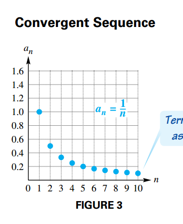
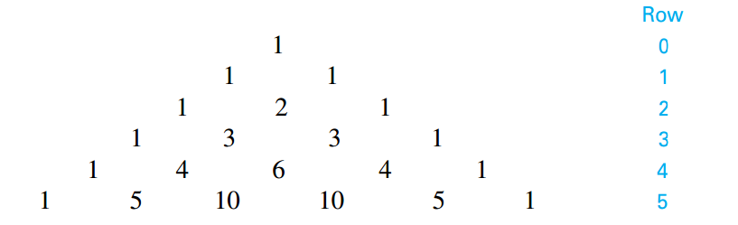
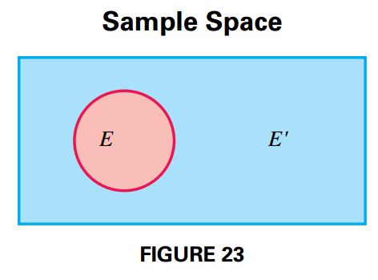

Further Topics in Algebra
Sequences and Series
Sequences
A sequence is a function that has a set of natural numbers as its domain.
Instead of using a funcion notation to indicate a sequence $f$, we use $a_n$, where $a_n = f(n)$.
The elements in the range of a sequence are called the terms of the sequence, and they are ordered.
The general term of the $n$th term of the sequence is $a_n$.
A sequence is a finite sequence if the domain is a finite set ${1, 2, 3, 4, \cdots, n}$, where $n$ is a natural number. An infinite sequence has the set of a ll natural numbers as its domain.
If the terms of an infinite sequence get closer to some real number, the sequence is said to be convergent and to converge to that real number (see Figure 3). A sequence that does not converte to some number is divergent.

Some sequences are defined by a recursive definition, a definition in which each term is defined as an expression involving the previous term or terms.
Series
The sum of the terms of a sequence is called a series.
A finite series is an expression of the form:
$$ \begin{aligned} S_n = a_1 + a_2 + a_3 + \cdots + a_n = \sum_{i=1}^n a_i \end{aligned} $$An infinite series is an expression of the form:
$$ \begin{aligned} S_{\infty} = a_1 + a_2 + a_3 + \cdots + a_n + \cdots = \sum_{i=1}^{\infty} a_i \end{aligned} $$Summation Properties
If $a_1, a_2, a_3, \cdots, a_n$ and $b_1, b_2, b_3, \cdots, b_n$ are two sequences, and $c$ is a constante, then for every positive integer $n$, the following hold:
$$ \begin{aligned} \sum_{i=1}^n c = n c \end{aligned} $$$$ \begin{aligned} \sum_{i=1}^n ca_i = c \sum_{i=1}^n a_i \end{aligned} $$$$ \begin{aligned} \sum_{i=1}^n (a_i + b_i) = \sum_{i=1}^n a_i + \sum_{i=1}^n b_i \end{aligned} $$$$ \begin{aligned} \sum_{i=1}^n (a_i - b_i) = \sum_{i=1}^n a_i - \sum_{i=1}^n b_i \end{aligned} $$Summation Rules
$$ \begin{aligned} \sum_{i=1}^n i = 1 + 2 + \cdots + n = \frac{n(n + 1)}{2} \end{aligned} $$$$ \begin{aligned} \sum_{i=1}^n i^2 = 1^2 + 2^2 + \cdots + n^2 = \frac{n(n + 1)(2n + 1)}{6} \end{aligned} $$$$ \begin{aligned} \sum_{i=1}^n i^3 = 1^3 + 2^3 + \cdots + n^3 = \frac{n^2(n + 1)^2}{4} \end{aligned} $$Arithmetic Sequences and Series
Arithmetic Sequences
A sequence in which each term after the first is obtained by adding a fixed number, the common difference $d$, to a previous term is an arithmetic sequence (or arithmetic progression). The common difference is obtained as:
$$ \begin{aligned} d = a_{n + 1} - a_n \end{aligned} $$In an arithmetic sequence with first term $a_1$ and common difference $d$, the $n$th term is:
$$ \begin{aligned} a_n = a_1 + (n - 1)d \end{aligned} $$To obtain the graph for that sequence:
$$ \begin{aligned} a_n = a_1 + (n - 1)d \end{aligned} $$$$ \begin{aligned} = a_1 + dn - d \end{aligned} $$$$ \begin{aligned} = dn + (a_1 - d) \end{aligned} $$$$ \begin{aligned} = dn + c \end{aligned} $$where $c = a_1 - d$. Such that the points on the graph of an arithmetic sequence $f$ are defined by $f(n) = dn + c$. The following image shows such a graph:

Arithmetic Series
The sum of the terms of an arithmetic sequence is an arithmetic series. To obtain the general formula for the arithmetic series we first write the sum of the first $n$ terms as:
$$ \begin{aligned} S_n = a_1 + (a_1 + d) + (a_1 + 2d) + \cdots + (a_1 + (n - 1)d) \end{aligned} $$Now we write the same sum in reverse order, beginnin with $a_n$ and substracting $d$:
$$ \begin{aligned} S_n = a_n + (a_n - d) + (a_n - 2d) + \cdots + (a_n - (n - 1)d) \end{aligned} $$Now we add both expressions:
$$ \begin{aligned} 2 S_n = (a_1 + a_n) + (a_1 + a_n) + \cdots + (a_1 + a_n) \end{aligned} $$$$ \begin{aligned} 2 S_n = n(a_1 + a_n) \end{aligned} $$$$ \begin{aligned} S_n = \frac{n}{2}(a_1 + a_n) \end{aligned} $$$$ \begin{aligned} S_n = \frac{n}{2}(a_1 + a_1 + (n-1)d) \end{aligned} $$$$ \begin{aligned} S_n = \frac{n}{2}(2a_1 + (n-1)d) \end{aligned} $$Geometric Sequences and Series
Geometric Sequences
A geometric sequence (or geometric progression) is a sequence in which each term after the first is obtained by multiplying the preceding term by a constant non-zero real number, called the common ratio $r$. That is:
$$ \begin{aligned} r = \frac{a_{n+1}}{a_n} \end{aligned} $$In a geometric sequence with first term $a_1$ and common ratio $r$, where neither of them are zero, then the $n$th term is:
$$ \begin{aligned} a_n = a_1 r^{n-1} \end{aligned} $$Geometric Series
A geometric series is the sum of the terms of a geometric sequence. To find a formula of the sum $S_n$ first we write the sum as follows:
$$ \begin{aligned} S_n = a_1 + a_2 + \cdots + a_n \end{aligned} $$$$ \begin{aligned} = a_1 + a_1 r + \cdots + a_1 r^{n-1} \end{aligned} $$We multiply each side of the equation by $r$
$$ \begin{aligned} rS_n = a_1r + a_1 r^2 + \cdots + a_1 r^{n} \end{aligned} $$And now we substract these two equations:
$$ \begin{aligned} S_n - rS_n = a_1 + (a_1r - a_1r) + (a_1 r^2 - a_1 r^2) + \cdots + (a_1 r^{n-1} - a_1 r^{n-1}) - a_1 r^{n} \end{aligned} $$$$ \begin{aligned} S_n - rS_n = a_1 - a_1 r^{n} \end{aligned} $$$$ \begin{aligned} S_n (1 - r) = a_1 - a_1 r^{n} \end{aligned} $$$$ \begin{aligned} S_n = \frac{a_1 - a_1 r^{n}}{1 - r}, r \neq 1 \end{aligned} $$Infinite Geometric Series
If a geometric sequence has first term $a_1$ and common ratio $r$, then:
$$ \begin{aligned} S_n = \frac{a_1 - a_1 r^{n}}{1 - r}, r \neq 1 \end{aligned} $$$$ \begin{aligned} S_n = \frac{a_1(1 - r^{n})}{1 - r}, r \neq 1 \end{aligned} $$If $|r| < 1$, then $\lim_{n \rightarrow \infty}r^n = 0$ and
$$ \begin{aligned} \lim_{n \rightarrow \infty} S_n = \frac{a_1(1 - 0)}{1 - r} = \frac{a_1}{1 - r} \end{aligned} $$The quotient $\frac{a_1}{1 - r}$ is called the sum of the term of an infinite geometric sequence. The limit $\lim_{n \rightarrow \infty} S_n$ can be expressed as $S_{\infty}$ or $\sum_{i=1}^{\infty} a_i$.
Counting Theory
Fundamental Principle of Counting
Two events are independent events if neither influences the outcome of the other.
If $n$ independent events take place, with:
$$ \begin{aligned} \begin{matrix} m_1 \text{ ways for event } 1 \text{ to occur}, \\ m_2 \text{ ways for event } 2 \text{ to occur}, \\ \cdot \\ \cdot \\ \cdot \\ m_n \text{ ways for event } n \text{ to occur}, \\ \end{matrix} \end{aligned} $$then there are:
$$ \begin{aligned} m_1 \times m_2 \times \cdots \times m_n \end{aligned} $$different ways for all $n$ events to occur.
n-Factorial
For any positive integer $n$:
$$ \begin{aligned} n! = n(n-1)(n-2)\cdots (3)(2)(1) \end{aligned} $$By definition $0! = 1$.
Permutations
A permutation of $n$ elements taken $r$ at a time if one of the possible orderings of $r$ elements from a set of $n$ elements. The number of permutations of $r$ elements on a set of $n$ elements its denoted by $P(n, r)$ and is calculated as follows:
$$ \begin{aligned} P(n, r) = n(n - 1)(n - 2)(n - r + 1) \end{aligned} $$$$ \begin{aligned} = \frac{n(n - 1)(n - 2)(n - r + 1)(n - r)(n - r - 1) \cdots (2)(1)}{(n - r)(n - r - 1)\cdots (2)(1)} \end{aligned} $$$$ \begin{aligned} = \frac{n!}{(n - r)!} \end{aligned} $$Altenative notations for $P(n, r)$ are $P^n_r$ and ${n}P{r}$.
Combinations
A subset of items selected without regard to order is called a combination.
To evaluate $C(n, r)$, we start with the number of permutations, given by $P(n, r)$. To get rid of the repeat orderings we divide by $r!$ (the number of ways to oder the subset of $r$ elements). Such that the number of combinations of $n$ elements taken $r$ at a time is obtained as:
$$ \begin{aligned} C(n, r) = \frac{P(n, r)}{r!} \end{aligned} $$$$ \begin{aligned} = \frac{n!}{(n - r)!r!} \end{aligned} $$Altenative notations for $C(n, r)$ are $C^n_r$ and ${n}C{r}$.
The Binomial Theorem
Binomial Coefficient
Generalizing, we find that the coefficient for the term of the expansion of $(x + y)^n$ in which the variable part is $x^ry^{n -r}$, where $r \leq n$ is:
$$ \begin{aligned} \binom{n}{r} = \frac{n!}{r!(n - r)!} \end{aligned} $$which is equivalent to $C(n ,r)$. This number is called the binomial coefficient and is often written as $\binom{n}{r}$.
Pascal’s Triangle
If we only write the coffiencients for the expansion of $(x + y)^n$ we obtain the following pattern:

Such that each number in the triangle is the sum of the two numbers directly above it. This triangular array of numbers is called Pascal’s Triangle.
The Binomial Theorem
Our observations about the expansion of $(x + y)^n$ are summarized as follows:
- There are $n + 1$ terms in the expansion.
- The first term is $x^n$ and the last term is $y^n$
- In each term, the exponent on $x$ decreases by $1$, and the exponent on $y$ increases by $1$.
- The sum of the exponents on $x$ and $y$ in any term is $n$
- The coefficient of the term with $x^ry^{n - r}$ o $x^{n - r}y^r$ is $\binom{n}{r}$
From these observations the binomial theorem is derived:
For any positive integer $n$:
$$ \begin{aligned} (x + y)^n = x^n + \binom{n}{1} x^{n-1}y + \binom{n}{2}x^{n-2}y^2 + \cdots + \binom{n}{r}x^{n - r}y^r + \cdots + \binom{n}{n - 1}xy^{n - 1} + y^n \end{aligned} $$$$ \begin{aligned} (x + y)^n = \sum_{r=0}^n \binom{n}{r}x^{n - r}y^r \end{aligned} $$rth Term of a Binomial Expansion
The $r$th term of the binomial expansion of $(x + y)^n$, where $n \geq r - 1$ is:
$$ \begin{aligned} \binom{n}{r - 1} x^{n - (r - 1)} y^{r - 1} \end{aligned} $$Mathematical Induction
Principle of Mathematical Induction
Let $S_n$ be a statement concerning the positive integer $n$. Suppose that both of the following hold:
- $S_1$ is true.
- For any positive integer $k$, $k \leq n$ if $S_k$ is true, then $S_{k+1}$ is also true.
Then $S_n$ is true for every positive integer $n$.
Method of Proof by Mathematical Induction
- Prove that the statement is true for $n = 1$.
- Show that for any positive integer $k$, if $S_k$ is true then $S_{k+1}$ is also true.
Generalized Principle of Mathematical Induction
Let $S_n$ be a statement concerning the positive integer $n$. Let $j$ be a fixed positive integer. Suppose that both of the following hold.
- $S_j$ is true.
- For any positive integer $k$, $k \geq j$, $S_k$ implies $S_{k+1}$
Then $S_n$ is true for all positive integers $n$, where $n \geq j$.
Proof of the Binomial Theorem
The binomial theorem can be proved by mathematical induction. That is, for any positive integer $n$ and any numbers $x$ and $y$,
$$ \begin{aligned} (x + y)^n = x^n + \binom{n}{1} x^{n-1}y + \binom{n}{2} x^{n-2}y^2 + \cdots + \binom{n}{r} x^{n - r}y^r + \cdots + \binom{n}{n-1}xy^{n-1} + y^n \end{aligned} $$Proof Let $S_n$ be the previous statement. Begin by verifying $S_n$ for $n = 1$.
$$ \begin{aligned} (x + y)^{n=1} = x + y = \binom{1}{0}x^1y^0 + \binom{1}{1} x^0y^1 \end{aligned} $$Now we assume $S_k$, such that:
$$ \begin{aligned} (x + y)^k = x^k + \frac{k!}{1!(k - 1)!} x^{k-1}y + \frac{k!}{2!(k - 2)!} x^{k-2}y^2 + \cdots + \frac{k!}{r!(k - r)!} x^{k - r}y^r + \cdots + \frac{k!}{(k - 1)!1!}xy^{k-1} + y^k \end{aligned} $$We multiply the left side by $(x + y)$:
$$ \begin{aligned} (x + y)(x + y)^k = x(x + y)^k + y(x + y)^k \end{aligned} $$And we apply $S_k$
$$ \begin{aligned} x(x + y)^k + y(x + y)^k = x\left[x^k + \frac{k!}{1!(k - 1)!} x^{k-1}y + \frac{k!}{2!(k - 2)!} x^{k-2}y^2 + \cdots + \frac{k!}{r!(k - r)!} x^{k - r}y^r + \cdots + \frac{k!}{(k - 1)!1!}xy^{k-1} + y^k\right] + y \left[x^k + \frac{k!}{1!(k - 1)!} x^{k-1}y + \frac{k!}{2!(k - 2)!} x^{k-2}y^2 + \cdots + \frac{k!}{r!(k - r)!} x^{k - r}y^r + \cdots + \frac{k!}{(k - 1)!1!}xy^{k-1} + y^k\right] \end{aligned} $$$$ \begin{aligned} = \left[x^{k + 1} + \frac{k!}{1!(k - 1)!} x^{k}y + \frac{k!}{2!(k - 2)!} x^{k-1}y^2 + \cdots + \frac{k!}{r!(k - r)!} x^{k - r + 1}y^r + \cdots + \frac{k!}{(k - 1)!1!}x^2y^{k-1} + xy^k\right] + \left[yx^k + \frac{k!}{1!(k - 1)!} x^{k-1}y^2 + \frac{k!}{2!(k - 2)!} x^{k-2}y^3 + \cdots + \frac{k!}{r!(k - r)!} x^{k - r}y^{r + 1} + \cdots + \frac{k!}{(k - 1)!1!}xy^{k} + y^{k+1}\right] \end{aligned} $$Now we group the elements with the same terms:
$$ \begin{aligned} = x^{k+1} + \left[\frac{k!}{1!(k - 1)!} x^{k}y + \frac{k!}{0!k!} yx^k \right] + \left[\frac{k!}{2!(k - 2)!} x^{k-1}y^2 + \frac{k!}{1!(k - 1)!} x^{k-1}y^2 \right] + \cdots + \left[\frac{k!}{r!(k - r)!} x^{(k - r) + 1}y^r + \frac{k!}{(r - 1)!(k - (r - 1))!}x^{(k - r) + 1}y^{r} \right] + \cdots + y^{k + 1} \end{aligned} $$We first show that:
$$ \begin{aligned} \frac{k!}{r!(k - r)!} + \frac{k!}{(r + 1)!(k - (r + 1))!} = \binom{k + 1}{r + 1} \end{aligned} $$By the definition of the factorial of a number:
$$ \begin{aligned} = \frac{k (k - 1) (k - 2) \cdots (k - r) \cdots 1}{(r + 1)!(k - r - 1)!} + \frac{k (k - 1) (k - 2) \cdots (k - r + 1) \cdots 1}{r!(k - r)!} \end{aligned} $$$$ \begin{aligned} = \frac{k (k - 1) (k - 2) \cdots (k - r)}{(r + 1)!} + \frac{k (k - 1) (k - 2) \cdots (k - r - 1)}{r!} \end{aligned} $$$$ \begin{aligned} = \frac{k (k - 1) (k - 2) \cdots (k - r)}{(r + 1)!} + (r + 1)\frac{k (k - 1) (k - 2) \cdots (k - r + 1)}{(r + 1)!} \end{aligned} $$$$ \begin{aligned} = \frac{k(k - 1)(k - 2) \cdots (k - r - 1) \left[(k - r) + (r + 1)\right]}{(r + 1)!} \end{aligned} $$$$ \begin{aligned} = \frac{k(k - 1)(k - 2) \cdots (k - r - 1) \left[k + 1\right]}{(r + 1)!} \end{aligned} $$$$ \begin{aligned} = \frac{(k + 1)k(k - 1)(k - 2) \cdots (k - r - 1)}{(r + 1)!} \end{aligned} $$$$ \begin{aligned} = \frac{(k + 1)k(k - 1)(k - 2) \cdots (k - r - 1) \cdots 1}{(r + 1)!(k - r)!} \end{aligned} $$$$ \begin{aligned} = \frac{(k + 1)!}{(r + 1)!((k + 1) - (r + 1))!} \end{aligned} $$$$ \begin{aligned} = \binom{k + 1}{r + 1} \end{aligned} $$So now:
$$ \begin{aligned} = x^{k+1} + \left[\frac{k!}{1!(k - 1)!} + \frac{k!}{0!k!}\right] x^{k}y + \left[\frac{k!}{2!(k - 2)!} + \frac{k!}{1!(k - 1)!} \right] x^{k-1}y^2 + \cdots + \left[\frac{k!}{r!(k - r)!} + \frac{k!}{(r - 1)!(k - (r - 1))!} \right] x^{(k - r) + 1} y^r + \cdots + y^{k + 1} \end{aligned} $$By the previous proof $\frac{k!}{r!(k - r)!} + \frac{k!}{(r + 1)!(k - (r + 1))!} = \binom{k + 1}{r + 1}$, therefore:
$$ \begin{aligned} = x^{k+1} + \binom{k + 1}{1} x^{k}y + \binom{k + 1}{2} x^{k-1}y^2 + \cdots + \binom{k + 1}{r!} x^{(k - r) + 1} y^r + \cdots + y^{k + 1} \end{aligned} $$$$ \begin{aligned} = x^{k+1} + \binom{k + 1}{1} x^{(k + 1) - 1}y + \binom{k + 1}{2} x^{(k + 1) - 2}y^2 + \cdots + \binom{k + 1}{r} x^{(k + 1) - r} y^r + \cdots + y^{k + 1} \end{aligned} $$$$ \begin{aligned} = \sum_{r = 0}^{k + 1} \binom{k + 1}{r}x^{(k + 1) - r}y^r \end{aligned} $$Probability
Basic Concepts
Given an experiment that has one or more outcomes that are equally likely to occur. Then the set $S$ of all possible outcomes of a given experiment is called the sample space for the experiment. For example, the sample space for the experiment of tossing a consists of the outcomes $H$ (heads) and $T$ (tails). This can be written in set notation as:
$$ \begin{aligned} S = \{H, T\} \end{aligned} $$Any subset of the sample space is called an event. To represent the number of outcomes that belong to event $E$ we use the notation $n(E)$.
The notation $P(E)$ is used for the probability of an event $E$.
Probability of Event E
In a sample space with equally likely outcomes, the probability of an event $E$, written $P(E)$ is given by:
$$ \begin{aligned} P(E) = \frac{n(E)}{n(S)} \end{aligned} $$where $n(E)$ is the number of outcomes in sample space $S$ that belong to event $E$, and $n(S)$ is the total number of outcomes in sample space $S$.
Complements and Venn Diagrams
The set of all outcomes in the sample space that do not belong to event $E$ is called the complement of $E$, written $E’$. By definition:
$$ \begin{aligned} E \cup E' = S \end{aligned} $$$$ \begin{aligned} E \cap E' = \emptyset \end{aligned} $$Probability concepts can be illustrated using Venn Diagrams, as shown in FIGURE 23.

Odds
The odds in favor of an event $E$ are expressed as the ratio of $P(E)$ to $P(E’)$, or as the fraction $\frac{P(E)}{P(E’)}$.
If the odds favoring event $E$ are $m$ to $n$, then:
$$ \begin{aligned} P(E) = \frac{m}{m + n} \end{aligned} $$and
$$ \begin{aligned} P(E') = \frac{n}{m + n} \end{aligned} $$Union of Two Events
Two events $H$ and $K$ that cannot occur simultaneously are said to be mutually exclusive, therefore $H \cap K = \emptyset$ is always true. This suggests the following proprety:
For any events $E$ and $F$:
$$ \begin{aligned} P(E \text{ or } F) = P(E \cup F) = P(E) + P(F) - P(E \cap F) \end{aligned} $$Properties of Probability
For any events $E$ and $F$ the following hold:
- $0 \leq P(E) \leq 1$
- $P(\text{a certain event}) = 1$
- $P(\text{an impossible event}) = 0$
- $P(E’) = 1 - P(E)$
- $P(E \text{ or } F) = P(E \cup F) = P(E) + P(F) - P(E \cap F)$
Binomial Probability
An experiment that consists of repeated independent trials, which only has two outcomes (success and failure) is called a binomial experiment.
Let the probability of success in one trial be $p$, such that the probability of failure becomes $1 - p$. Then the probability of $r$ successes in $n$ trials is:
$$ \begin{aligned} \binom{n}{r} p^r (1 - p)^r \end{aligned} $$